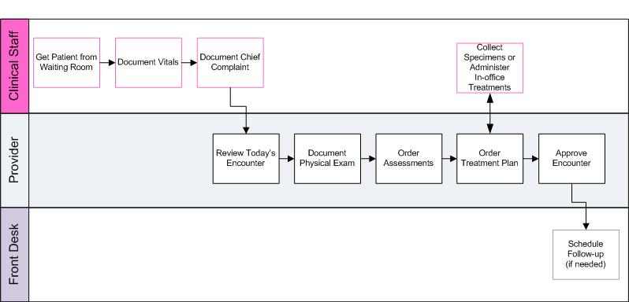

In this solution...
- What is Workflow?
- How Does encounterPRO Use Workflow?
- Want to Learn More?
- Related Solutions
- Related Education Opportunities
What is Workflow?
Workflow is simply providing the needed information to the right people in the right sequence. Applied to your office, encounterPRO's workflow focuses upon patient information and patient care. EncounterPRO moves patient information to the administrator, nurse, lab technician, provider, or other persons responsible for specific tasks, and then provides the tools - in the form of screens - to perform those tasks quickly and accurately.
A series of computer screens correspond to each process in a doctor's office or clinic used to record and process patient information: checking in patients, tracking patients throughout the office, taking vitals, documenting an encounter, writing prescriptions, and more.
EncounterPRO's workflow system allows providers and staff to exchange patient information rapidly. When the nurse or technician records a patient's vitals, that information flows to the encounter screens. At the same time, the provider can see on the Office View when the vitals have been taken and the patient is ready to be examined.
When a provider orders procedures from an Encounter screen, those orders appear instantly on the screen at the nurse or lab tech station.
How Does encounterPRO Use Workflow?
Workflow is accomplished in encoutnerPRO using workplans. Workplans are the step-by-step tasks and processes performed during an encounter which are performed in a particular sequence.
EncounterPRO is delivered with many workplans. Basic workplans for sick and well visits have been standardized by specialty. An example of a common workflow is shown below:

As you can see from the diagram, certain tasks are assigned to the clinical staff and other tasks are reserved for the provider. Determining which tasks will be done by the clinical staff and which will be done by the provider is configurable. Certified Configuration users can customize these workplans to meet your specific needs or create new workplans as needed. Modifying or creating workplans is discussed in the Configuration Level 2 course.
|